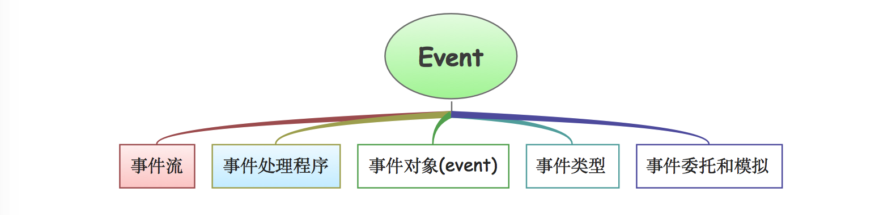
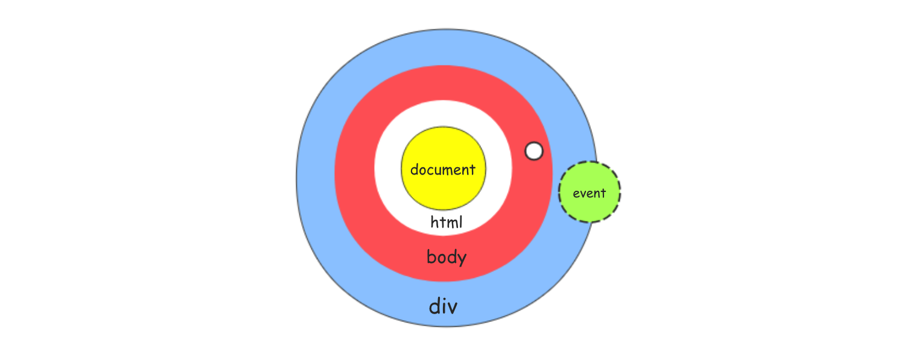
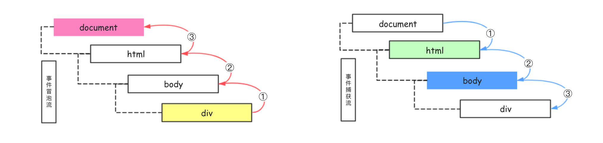
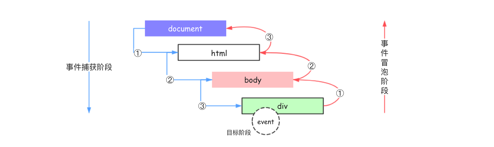
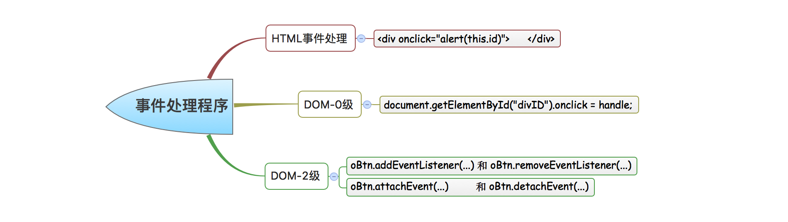
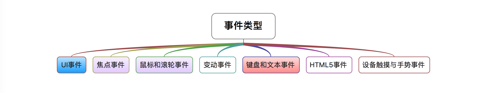
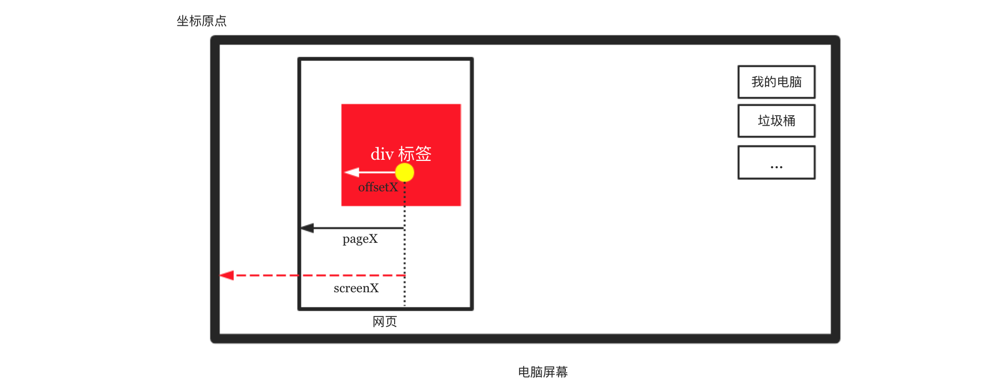

本文介绍JavaScript事件相关的知识点，主要包括事件流、事件处理程序、事件对象(event)以及常见事件类型和事件委托等相关内容。

在网页开发涉及的三种基础技术( HTML \ CSS \ JavaScript )中，JavaScript主要负责处理页面的行为，而所谓行为大多指的是交互行为。JavaScript和HTML间的交互通过事件来实现 ，换句话来说事件其实就是页面文档或浏览器窗口中发生的特定交互，譬如页面中的按钮标签被点击我们称之为按钮的点击(click)事件，类似的还有页面加载事件、鼠标的移入移除等等。
通常,我们在开发中对事件的操作(处理)主要由两部分组成，即事件注册和事件函数。我们总是需要先通过特定的方式来给标签添加(注册)事件监听，当事件发生时事件函数将得以调用执行。本文以能够清晰明确的把事件的传递过程、事件注册的方式、事件对象以及常见的事件类型讲解清楚 为目标。
**事件流**

事件流 描述的其实是事件内在的传递过程(顺序)。
我们的开发经验是，当我们给某些标签注册(绑定)了事件后，该事件被触发就会执行对应的事件处理函数。这似乎是一个顺理成章的经验，但事件到底是如何传递的呢 ？我们知道在网页中有很多的Node节点，而Node节点之间是复杂的树结构，事件在接收、传递和处理的时候，是按照目标节点->上层节点->根节点还是根节点->下层节点->目标节点的顺序传递的呢？ 不管它们是按照什么样的顺序来传递接收的，事件在传递的时候都会形成一个流式的传递结构，这就是所谓的事件流。
关于事件流的处理最早由 IE4 和 Netscape Communicator 4 两个浏览器开发团队提出具体方案，有意思的是它们在处理这个相同问题的时候居然提出了两种完全相反的事件流方案。其中， IE 的事件流是事件冒泡流 ，而 Netscape Communicator 4 的事件流是事件捕获流 。如果再加上DOM2级事件规定的事件流，那么意味着我们将要学习三种不同事件流，感觉有些棘手但好在它们本身并不复杂。下面我们将从IE的冒泡事件流开始介绍。

事件冒泡流
事件冒泡 event bubbling 指的是事件开始时由最具体的元素接收，然后逐级向上传递到文档。
事件捕获流
事件捕获 event capturing 指的是由页面文档先接收事件，然后逐级向下传递到最具体的元素。

DOM事件流
DOM2级事件 规定的事件流包括三个阶段：事件捕获阶段 、处于目标阶段 和 事件冒泡阶段 。事件捕获会首先发生，其为截获事件提供了机会，然后是实际的目标接收到事件，最后会对事件进行冒泡，可以在事件冒泡阶段对事件作出响应。
事件流的浏览器支持情况
1 2 3 4 5 6 7 8 9 10 11 (一)事件冒泡流 所有现代浏览器都支持事件冒泡，在具体实现的时候存在差异。 IE5-的事件冒泡会跳过html标签，而IE9+、Firefox、Chrome 和 Safari 则将事件一直冒泡到 window 对象。 (二)事件捕获流 IE9+、Firefox、Chrome、Safari 和 Opera等浏览器均支持事件捕获流，它们均从 window 对象开始捕获事件。 因为老版本的浏览器不支持，因此很少有人使用事件捕获流(只在特殊需要的时候)。 (三)DOM事件流 IE9+、Firefox、Chrome、Safari 和 Opera等浏览器均支持DOM事件流，IE8-则不支持。
**事件处理程序(函数)**
事件指的是用户或浏览器自身执行的某种动作，譬如点击、拖拽、滚动等都是事件，在JavaScript中每种事件都有自己对应的名字，我们需要先通过特定的形式来给标签注册(绑定)事件，等事件被触发后进行响应，这个用来响应某个具体事件的函数我们称之为事件处理函数。

在网页开发中，我们为标签事件指定事件处理函数的方式有多种，下面分别介绍。
① 在html标签中添加事件处理函数
我们可以直接在标签身上以属性节点的形式来添加事件处理函数，这个属性节点的值要求是能够执行的JavaScript代码，可以是弹出框、函数调用等等形式。
1 2 3 4 5 6 7 8 9 10 11 12 13 14 15 16 17 18 19 20 21 22 23 24 25 26 27 28 29 30 31 32 33 34 35 36 37 38 <!DOCTYPE html > <html lang ="en" > <head > <meta charset ="UTF-8" > <title > Title</title > </head > <body > <button onclick ="alert('点击了按钮')" > 按钮1</button > <button onclick ="showMsg()" > 按钮2</button > <input type ="button" onclick ="alert(event.type)" > <input type ="button" onclick ="alert(this.value)" value ="文顶顶" > <input type ="button" onclick ="alert(value)" value ="文顶顶" > <form action ="" > <input type ="text" name ="user" value ="文顶顶" > <input type ="button" value ="点击输出用户名" onclick ="alert(user.value)" > </form > <div style ="width:200px;height:50px;background:red" onmouseenter ="showLog()" > </div > <script > function showMsg ( console .log("我是按钮点击事件的响应函数" ); } function showLog ( console .log("鼠标移入div标签" ); } </script > </body > </html >
在以这种方式处理的事件函数中有权访问全局作用域中的任何代码，而且在执行的代码中可以直接(不用自己定义或者是从函数形参中读取)通过event变量来访问事件对象，在函数内部this的值则指向事件的目标元素。此外，还有一个比较特殊的地方是它内部扩展作用域的方式，简单说就是在事件函数内部可以像访问局部变量一样来访问document和该元素本身的成员。
**注意** 我们在开发中应该尽量避免使用直接以属性节点的方式来处理标签的事件，因为它内在的作用域扩展机制在不同的浏览器中可能会产生不同的结果，而且这种方式让`JavaScript`和`HTML`代码交织在一起，耦合太过紧密不便于维护且违背代码分离的原则。
② 通过标签的事件属性添加事件处理函数
我们也可以先通过DOM操作获取页面中指定的标签，然后通过把事件处理函数赋值给标签事件属性的方式来绑定事件。这种事件处理方式，因为其简单和跨浏览器的优势从第四代浏览器开始一直沿用至今。DOM中所有的元素( window \ document \ body \ div 等 )都拥有自己的事件处理属性，这些属性通常均为on + 事件类型的形式，全部小写且每个事件支持一个事件处理函数 。
我们为标签(元素)注册(绑定)事件只需要把事件处理函数赋值给元素的事件属性即可，标签常用的事件属性有onclick、onmouseenter和onkeydown等，使用时形如oBtn.onclick = function(){...} ，如果需要将标签上绑定的事件移除则只需要把事件属性赋值为null即可。
1 2 3 4 5 6 7 8 9 10 11 12 13 14 15 16 17 18 19 20 21 22 23 24 25 26 27 28 29 30 31 32 33 34 35 36 37 38 39 40 41 42 43 44 45 <!DOCTYPE html > <html lang ="en" > <head > <meta charset ="UTF-8" > <title > Title</title > </head > <body > <button id ="btnID" > 按钮</button > <div id ="divID" style ="width: 100px;height: 50px;background: #195" > 我是div标签</div > <input id ="inputID" type ="text" placeholder ="请输入..." value ="文顶顶" > <script > var oBtn = document .getElementById("btnID" ); var oDiv = document .getElementById("divID" ); var oIpt = document .getElementById("inputID" ); oBtn.onclick = function (event ) console .log("按钮被点击了" ,event.type); } oDiv.onmouseenter = enter; oDiv.onmouseleave = leave; function enter (event ) console .log("鼠标移入div标签" , event.currentTarget); } function leave (event ) console .log("鼠标移出div标签" , event.currentTarget); } oIpt.oninput = function (ev ) console .log("监听input事件" ,this .value); } </script > </body > </html >
因为在这种处理方式中，事件函数被认为是标签(元素)的方法，因此函数中的`this`引用当前的标签(元素)，可以在事件处理函数中直接通过`this`来访问当前标签(元素)的任何属性和方法。
③ 在JavaScript代码中为标签注册事件监听
我们还可以直接调用addEventListener()方法来给标签注册事件监听，同时支持为标签注册(addEventListener)和移除(removeEventListener)事件监听。所有的DOM节点都包含这两个方法，功能强大，唯一需要考虑的就是IE9-的兼容性问题。
语法ele.addEventListener(type,handle,bool) | ele.removeEventListener(type,handle,bool)参数type表示要处理的事件名(类型)，handle是事件处理函数，bool控制调用事件函数的阶段，如果值为false(默认)则表示在冒泡阶段调用，值为true则表示在捕获阶段调用。
1 2 3 4 5 6 7 8 9 10 11 12 13 14 15 16 17 18 19 20 21 22 23 24 25 26 27 28 29 30 var oBtn = document .getElementsByTagName("button" )[0 ];oBtn.addEventListener("click" ,listener, true ); oBtn.addEventListener("click" ,listener1, false ); oBtn.addEventListener("click" ,listener2, false ); function listener ( console .log("点击了按钮-A-捕获阶段" ); } function listener1 ( console .log("点击了按钮-B1-冒泡阶段" ); } function listener2 ( console .log("点击了按钮-B2-冒泡阶段" ); } oBtn.removeEventListener("click" ,listener2, false );
区别于onclick的方式，addEventListener()支持为标签绑定多个同类型的事件处理函数而且不存在覆盖的问题，当标签的事件被触发时绑定的事件处理函数会按照添加的顺序依次触发，需要注意的是在使用removeEventListener()方法移除标签的某个事件监听时，要求传入的函数同注册事件监听时的函数一致。此外，在IE9-的版本中，这两个方法不可用需考虑兼容性，在IE中我们可以使用attachEvent和detachEvent这两个方法来替代。
1 2 3 4 5 6 7 8 9 10 11 12 13 14 15 16 17 18 19 20 21 22 23 24 var oBtn = document .getElementsByTagName("button" )[0 ];oBtn.attachEvent("onclick" ,listener1); oBtn.attachEvent("onclick" ,listener2); function listener1 ( console .log("点击了按钮-A-冒泡阶段" ); } function listener2 ( console .log("点击了按钮-B-冒泡阶段" ); console .log(this ); } oBtn.detachEvent("onclick" ,listener2);
因为IE8及更早的版本只支持事件冒泡，因为通过`attachEvent()`方法添加的事件处理程序都会被添加到事件冒泡阶段，且事件函数中的this指向的并非事件标签而是`window`。
`
**常用的事件类型**

Web浏览器中可能发生的事件有很多种类型，如果是按照DOM3级事件的规定那么大概可以划分为UI事件、焦点和鼠标事件、文本和键盘事件以及变动事件等几种类型。因为涉及到的事件众多且用法各异，因此本节将只会简单罗列它们。
常用事件列表
1 2 3 4 5 6 7 8 9 10 11 12 13 14 15 16 17 18 19 20 21 22 23 24 25 26 27 28 29 30 31 32 33 34 35 36 37 38 39 40 41 42 43 44 45 46 47 48 49 50 51 52 53 54 55 56 57 58 59 60 61 62 63 64 65 UI事件 load : 当页面完全加载后(包括页面中所有图像、JavaScript和CSS文件等资源)触发window上面的load事件。 unload: 当页面被完全卸载后触发window上面的unload事件，常用于清除引用以避免内存泄露。 resize: 当浏览器窗口被调整时会触发window上面的resize事件，该事件不同浏览器触发机制不同(FireFox)。 scroll: 当页面文档滚动的时候会触发window上面的scroll方法。 我们可以通过scrollLeft和scrollTop来监控该变化，需要注意标准和混杂模式下的差别。 焦点事件 blur: 当元素失去焦点的时候触发。 focus: 当元素获得焦点的时候触发。 鼠标和滚轮事件 click: 当被点击(或者按下键盘回车键)的时候触发。 dbclick: 当被双击的时候触发。 mousedown: 当用户按下任意鼠标键的时候触发。 mouseup: 当用户释放鼠标按钮的时候触发。 mouseenter: 当鼠标移入到元素范围内的时候触发，该事件不冒泡且对后代元素没影响。 mouseleave: 当鼠标移出到元素范围内的时候触发，该事件不冒泡且对后代元素没影响。 mousemove: 当鼠标在元素内部移动时重复触发。 mouseover: 当鼠标移入到元素范围内的时候触发，对后代元素有影响。 mouseout: 当鼠标移出到元素范围内的时候触发，对后代元素有影响。 mousewheel: 当用户通过鼠标滚轮与页面交互滚动页面的时候触发。 说明1：在一个元素中相继触发mousedown和mouseup事件后会自动触发click事件 说明2：在一个元素中相继触发两次click事件则会自动触发dbclick事件。 键盘和文本事件 keydown: 当用户按下键盘上的任意键时触发，按住不放则重复触发。 keypress: 当用户按下键盘上的字符键的时候触发，按住不放则重复触发。 keyup: 当用户释放键盘上按键的时候触发。 input: 在文本插入文本框之前触发input事件，是对keypress的补充。 change: 在文本框内容改变(敲击回车键)的时候触发。 select: 在文本被选中的时候触发。 reset: 当点击重置按钮的时候被触发。 submit: 表单提交的时候被触发。 说明1：键盘和文本事件常用于用户通过文本框输入文本的时候。 说明2：当用户按下键盘上字符键的时候首先触发keydown事件，然后是keypress事件最后触发keyup(后)事件。 说明3：当用户按下键盘上非字符键的时候首先触发keydown事件，然后keyup(后)事件。 说明4：任何可以获得焦点的元素都能够触发keypress事件，而只有可编辑区域才能触发textInput事件。 DOM节点事件 DOMSubtreeModified: DOM结构发生任何变化都会触发。 DOMNodeInserted: 当某个节点被插入到另一个节点中时被触发。 DOMNodeRemoved: 当某个节点被从其父节点中删除时会被触发。 DOMNodeInsertedIntoDocument: 当某个节点被插入到文档后会被触发。 DOMNodeRemovedFromDocument: 当某个节点被从文档中删除后被触发。 DOMAttrModified: 当属性节点被修改后被触发。 DOMCharacterDataModified: 当文本节点值发生变化时被触发。 注意：IE8及更早版本不支持任何DOM事件。 HTML5事件 contextmenu: 该事件用于控制显示自定义的上下文菜单。 beforeunload: 该事件在页面卸载前触发，通常表现为弹出对话框提示用户是否确认离开页面。 DOMContentLoaded: 当DOM树构造完成后触发，先于load，我们可以通过document来监听。 readystatechange: 当文档状态发生改变时触发，支持该事件的对象均拥有readyState属性来获取当前状态。 uninitialized(未初始化)：对象存在但尚未初始化。 loading(正在加载)： 对象正在加载数据。 loaded(加载完毕)： 对象加载数据完成。 interactive(交互)： 可以交互操作对象，但还没有完全加载完毕。 complete(完成)： 对象已经加载完毕。 。
通常，我们总是把JavaScript的代码写到window.onload函数中以保证在执行JavaScript代码的时候页面和所有资源均以加载完毕。
1 2 3 4 5 6 7 8 9 10 11 12 13 14 15 16 17 18 19 20 21 22 23 24 25 26 27 28 29 30 31 32 33 34 35 36 37 38 39 40 41 42 43 44 45 46 47 48 49 50 51 52 53 54 <body > <form action ="" > <input type ="text" placeholder ="请输入" id ="inputID" > </form > <script > window .onload = function (ev ) console .log("页面所有资源都加载完毕--onload" ); } window .onunload = function (ev ) alert("页面被卸载---onunload" ) } window .onresize = function (ev ) console .log("浏览器窗口大小被调整--onresize" ); } window .onscroll = function (ev ) console .log("监听到页面滚动----onscroll" ) } var oInput = document .getElementById("inputID" ); oInput.onchange = function (ev ) console .log("输入框的值发生了变化--change" ,this .value); } oInput.oninput = function (ev ) console .log("输入框的值发生了变化--oninput" ,this .value); } oInput.onfocus = function (ev ) console .log("输入框获得焦点--onfocus" ); } oInput.onblur = function (ev ) console .log("输入框失去焦点--onblur" ); } </script > </body >
**事件对象**
事件对象记录着当事件发生时与该事件相关的所有必要信息，包括事件的目标对象、事件的类型等等，通常我们总是使用event或者e来表示事件对象。所有的浏览器都支持事件对象，但支持方式不同。兼容DOM的浏览器总是会将事件对象(event)作为第一个参数传入到事件处理函数中，而在IE8-版本的浏览器中事件对象作为window的属性存在，因此我们在具体写代码的时候需要考虑兼容问题。
1 2 3 4 5 6 var oBtn = document .getElementsByTagName("button" )[0 ]; oBtn.onclick = function (event ) var e = event || window .event; console .dir(e); }
我们可以通过上面这一小段代码的运行结果来讨论事件对象的核心成员，具体参考下面的结果以及给出的标准。需要说明的是，下面列出的是常用的click事件中事件对象的成员，并非所有事件的event对象都长这样。
1 2 3 4 5 6 7 8 9 10 11 12 13 14 15 16 17 18 19 20 21 22 23 24 25 26 27 28 29 30 31 32 33 34 35 36 37 38 39 40 41 42 MouseEvent altKey: false //当事件被触发时，"ALT" 是否被按下 bubbles: true //表明事件是否冒泡 button: 0 //返回当事件被触发时，哪个鼠标按钮被点击。 buttons: 0 cancelBubble: false //表明是否阻止事件冒泡 cancelable: true //表明是否可以取消事件的默认行为 clientX: 33 //事件发生位置的X坐标，参考页面的可视区域 clientY: 26 //事件发生位置的Y坐标 composed: true ctrlKey: false //当事件被触发时，"CTRL" 键是否被按下 currentTarget: null //事件处理程序当前正在处理的那个元素 defaultPrevented: false //表示是否已经调用了preventDefault()方法禁止默认行为 detail: 1 //与事件相关的细节信息 eventPhase: 0 //调用事件处理程序的阶段,1-捕获，2-目标，3-冒泡 fromElement: null isTrusted: true layerX: 33 //视图位置的X坐标 layerY: 26 //视图位置的Y坐标 metaKey: false //返回当事件被触发时，"meta" 键是否被按下。 movementX: 0 movementY: 0 offsetX: 24 //发生事件的地点在事件源元素的坐标系统中的 x 坐标 offsetY: 15 //发生事件的地点在事件源元素的坐标系统中的 y 坐标 pageX: 33 //页面位置的X坐标,页面没有滚动情况下等价于clientX pageY: 26 //页面位置的Y坐标,页面没有滚动情况下等价于clientY path: (5) [button, body, html, document, Window] //DOM数的路径 relatedTarget: null //返回与事件的目标节点相关的节点 returnValue: true //默认未true,设置未false表示取消事件的默认行为 screenX: 89 //事件的屏幕(相对于电脑屏幕)位置X坐标 screenY: 189 //事件的屏幕(相对于电脑屏幕)位置Y坐标 shiftKey: false //当事件被触发时，"SHIFT" 键是否被按下。 sourceCapabilities: InputDeviceCapabilities {firesTouchEvents: false} srcElement: button //事件的目标，同target保持一致 target: button //事件作用于哪个标签 timeStamp: 2490.9807 //从启动到事件发生间的时间戳 toElement: button //对于鼠标移入和移出事件，该属性引用移入鼠标的元素 type: "click" //事件的类型 view: Window {postMessage: ƒ, blur: ƒ, focus: ƒ, close: ƒ, parent: Window, …} which: 1 //对于keypress事件，该属性声明被敲击的键生成的 Unicode 字符码。 x: 33 //事件发生的位置的 x 坐标 y: 26 //事件发生的位置的 y 坐标
位置说明 下图说明了事件对象中offsetX/Y和ScreenX/Y以及clientX/Y的关系。

事件对象的兼容性问题 DOM和IE中的事件对象有很多不同之处，下面简单列出对比。
1 2 3 4 [1] event window.event 获取事件对象 [2] event.target event.srcElement 获取事件目标对象 [3] event.preventDefault(); event.returnValue = false; 禁止标签默认行为 [4] event.stopPropagation(); event.cancelBubble = true; 禁止事件冒泡
**事件冒泡 | 默认行为 | 事件委托**
事件冒泡 当我们在某个标签节点上触发某类事件时(譬如click点击事件)，该事件会沿着DOM树向上层节点逐级传播直到最顶层，在向上传播的过程中如果该节点注册了同类型的事件，那么这些事件也会被触发。
注意[1] blur、focus、load、unload 几个特殊的事件外。注意[2]注意[3]event.stopPropagation()方法来阻止事件冒泡，如果是IE8- 浏览器则需要通过event.cancelBubble = true代码设置。
默认行为 HTML页面中的很多标签都存在默认行为，譬如超连接点击的时候会自动跳转到目标页面，表单点击提交后会把内容提交到action指定的页面，还有右键菜单以及文本选择等等。在开发中，我们如果需要阻止这些标签的默认行为，那么可以使用event.preventDefault()方法，如果是E8- 浏览器则需要通过event.returnValue = false代码设置。
事件委托 事件委托是一种用来解决页面中事件处理函数过多问题的方案，它利用事件冒泡只指定一个事件处理函数就能够管理某一类型的所有事件，恰当的利用事件委托，可以节省内存空间，有效的提升程序的整体性能。